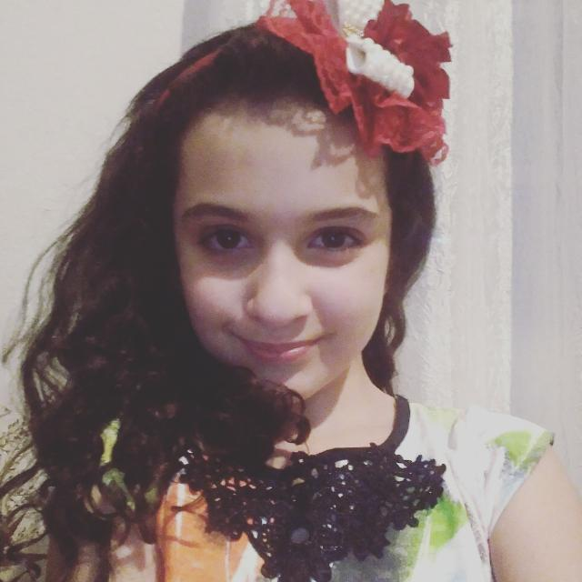

Gustavo: Professor formado em direito e Letras. Nasceu em Betim. Tem 27 anos. Fala Inglês, Alemão e Português. Animado que só! Quer mudar o mundo. Lutador. Criativo. Alegre. Juventude! Livre. Cheio de gás. Pontual. Burocrático. Simpático. Cinco anos na profissão.
Bruno: Professor formado em Engenharia, Física e Letras. Nasceu em Belo Horizonte, morou na Alemanha e atualmete reside em Betim. Tem 25 anos. Fala muitas línguas como Alemão, Inglês, Francês, Português e Espanhol.
Eliana: Professora formada em Pedagogia e Letras. Muito carismática. Nasceu em Belo Horizonte mas atualmente mora em Betim. Tem 32 anos. Ama a sua profissão. Adora frases sobre gratidão.
Mariedna: Professora formada em Letra. Foi para o Estados Unidos. Tem 34 anos. Mora em Contagem. Super divertida. Muito Simpática. Alunos que formaram, sempre falam muito bem de suas aulas.
Laura: Professora formada em Letras e Veterinária. Seu sonho era ser Delegada de Polícia, mas achou uma coisa que gosta muito, dar aula de inglês. Tem 25 anos. Mora em Betim.
Nicole: Professora mais nova que temos! Uma exelente profissional e muito dedicada no que faz. Fala Inglês e Espanhol. Mora em Betim. Com apenas 18 anos dando aula de Inglês.